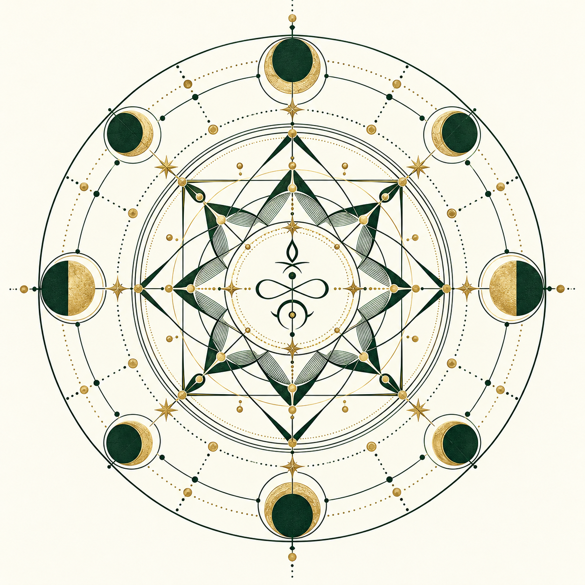

Today / Tools / Symbolic design
THE SYMBOLIC DESIGN ROOM
A thought.
A line. A pattern.
Make an intention sigil, trace a planetary square, or draw a geometric mandala. Keep the construction editable, the sources visible and your meaning your own.
Procedural art · historical sources where named · no demonstrated magical efficacy. The local drawings are calculated geometry; the separate example below was rendered by an AI model.
Choose a construction and draw a design.
A reproducible figure, not a promised result.
SVG stays editable in vector software. Exports omit the original phrase and exact location by default, but the drawing can still encode the phrase’s letter path. These files are not anonymous.
Replay a saved recipe.
Open a JSON drawing recipe exported by this studio. Inspection stays on this device and leaves your current drawing and controls intact. A file’s source labels are claims supplied by that file; numerical replay does not authenticate them.
Only bounded numerical drawing primitives are rendered. Supplied SVG, HTML and study prose are never executed or adopted. A text-derived path may still reveal information about its original phrase.
No recipe selected. Your current design is unchanged.
File-declared source records · unverified
Restoration recalculates the study sheet from the current local engines. It never adopts prose from the file or enables private-data export automatically.
Context beside the pattern.
A complete paper-only art and reading setup, grounded in the moment you chose. Source-derived rules and editorial choices keep their own labels.
Draw a design to build its study sheet.
Sources & construction details
From exact drawing to illustration.
Prepare a prompt for a chosen image model. Your exported SVG is the exact reference; an AI illustration may change numbers, letters or symmetry. This website does not inherit your ChatGPT login or send a prompt automatically.
Off by default. Even with it off, a text-derived path can reveal information about the phrase. Nothing is uploaded here.
Copy, open your chat, attach the SVG or PNG, then explicitly send. No model has been called by this studio.
AN ACTUAL AI-RENDERED EXAMPLE
A different kind of image.
This illustrative green-and-gold geometric mandala was generated with the image-generation tool during development. It is contemporary art, not a historical seal or a diagram with independently validated symmetry.
The local studio above produces the exact editable geometry. This example shows how a separate model can interpret a visual direction.
Download the AI illustration · PNG
